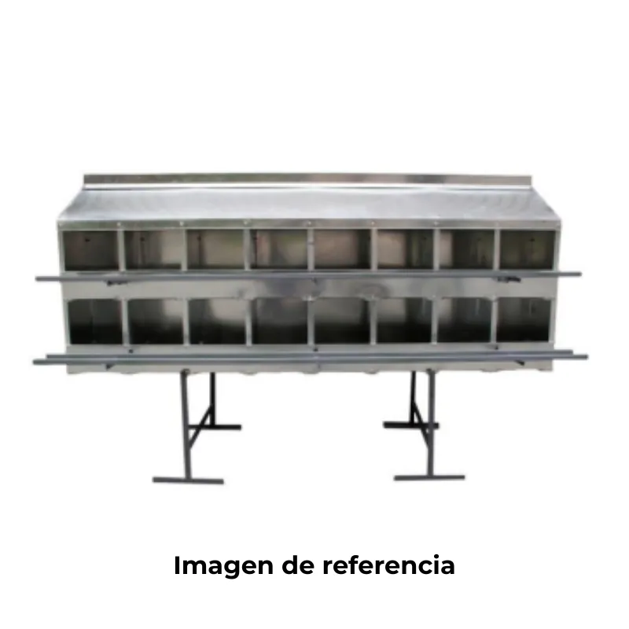

$301,200.00
Nidales para aves Ingeniería Avícola Alfonso SAS Optimiza la producción de huevos con nuestros nidales de alta calidad, diseñados para adaptarse tanto a galpones tecnificados como tradicionales. Fabricados con materiales duraderos y funcionales, nuestros nidales ofrecen un ambiente cómodo y seguro para la postura, ayudando a: Reducir el pisoteo y la rotura de huevos Disminuir el estrés en las aves Mejorar la eficiencia en la recolección Garantizar una postura más limpia y ordenada Variaciones disponibles según tu necesidad: Nidal de 36 puestos Nidal de 32 puestos Nido de 24 puestos Medio nido de 18-16 puestos Medio nido de 10 puestos

$45,500.00
Mantén a tus aves siempre bien hidratadas con este práctico bebedero automático, diseñado para brindar un suministro continuo de agua fresca y limpia. Su válvula de acción automática se activa con el leve contacto del pico del ave, evitando desperdicios y garantizando un consumo eficiente. Perfecto para gallinas, codornices, pollos, patos y otras aves de corral, este sistema minimiza el trabajo manual y asegura el bienestar de tus animales.

$11,500.00
Bebedero diseñado especialmente para gallinas, pollitos y otras aves de corral, con una capacidad de 1,5 galones (aprox. 5,7 litros). Fabricado en plástico resistente y apto para uso en exteriores, este bebedero mantiene el agua limpia y accesible gracias a su sistema de gravedad, que repone el nivel a medida que las aves beben. Ideal para pequeños corrales o criaderos, su base antideslizante y su estructura fácil de llenar y limpiar lo hacen una opción práctica y eficiente para mantener a tus aves bien hidratadas.

$18,500.00
Cuida a tus pollitos con el mejor aliado en su etapa más delicada. Este bebedero de 2 galones (aproximadamente 7,5 litros) está diseñado específicamente para facilitar el acceso al agua a aves pequeñas, reduciendo al mínimo el riesgo de ahogamiento. Su estructura segura y de fácil uso garantiza una hidratación constante y segura, acompañando a tus pollitos en su crecimiento saludable desde el primer día

$20,500.00
Este práctico bebedero de 7 litros está diseñado para brindar agua limpia y constante a tus pollitos durante sus primeras etapas de crecimiento. Su tamaño es ideal para evitar recargas frecuentes, y su diseño ergonómico ayuda a prevenir derrames y desperdicio de agua. Fabricado en materiales resistentes y fáciles de limpiar, es una opción confiable para mantener una correcta hidratación en criaderos o galpones.

$16,500.00
Maximiza el tiempo y minimiza el desperdicio con este comedero de 12 kg de capacidad, ideal para productores avícolas que priorizan la eficiencia y el rendimiento. Su diseño robusto y funcional permite almacenar una mayor cantidad de alimento, asegurando un suministro continuo por más tiempo y reduciendo la frecuencia de recarga. Fabricado con materiales duraderos, es perfecto para galpones tecnificados o tradicionales, ayudando a mantener el alimento limpio y accesible para tus aves.

$22,700.00
Maximiza tu tiempo y minimiza el desperdicio con este comedero de 12 kg, ideal para productores que buscan practicidad, eficiencia y alto rendimiento. Su diseño robusto y funcional permite almacenar una mayor cantidad de alimento, garantizando un suministro continuo y ordenado para tus aves durante más tiempo. Perfecto para sistemas de cría intensiva o tradicionales, este comedero contribuye a una alimentación más limpia, evitando derrames y reduciendo el desperdicio.

$25,500.00
Diseñado para granjas de mediana y gran escala, este comedero de 18 kg de capacidad es el aliado perfecto para mantener a tus aves bien alimentadas de forma continua y eficiente. Su gran capacidad reduce la frecuencia de recarga, mientras que su diseño funcional y resistente minimiza el desperdicio de alimento, optimizando tanto el manejo como la inversión. Ideal para galpones tecnificados o tradicionales que buscan rendimiento y practicidad en cada jornada.

$9,000.00
Especialmente diseñado para las primeras etapas de crecimiento, este comedero ofrece un acceso cómodo y seguro al alimento, cuidando el bienestar de los pollitos desde sus primeros días de vida. Su tamaño compacto, forma ergonómica y materiales resistentes permiten una alimentación limpia, sin desperdicios y fácil de mantener, favoreciendo un entorno higiénico y saludable en criaderos o galpones.